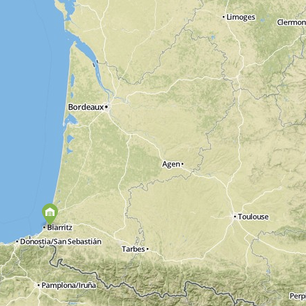
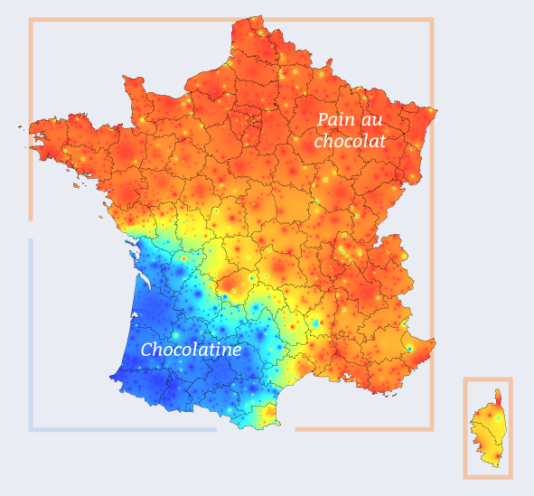
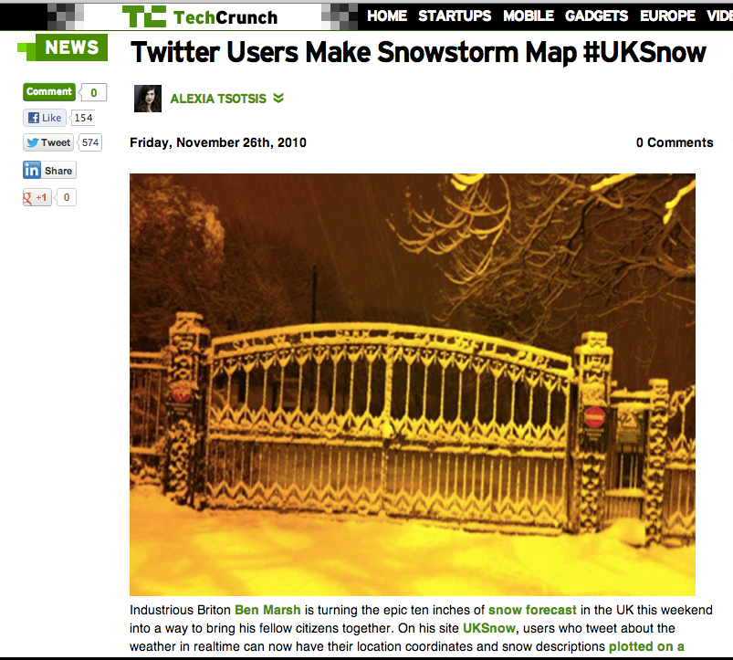

Neige Freu
Bruno Bord
- Développeur Web
- Clown Computing
- Je hais le printemps
Bayonne
#vraisud
In Chocolatine We Trust
Novembre 2010
Principe de base
- Un hashtag #uksnow
- un code postal
- (éventuellement une intensité "/10")
Confession :
Oui, j'ai des copains Bifs
Je me dis...
Go-Go-Gadgeto Django
Mécanisme
↓
#neigefr
crontab
Twitter API Search
url = 'http://search.twitter.com/search.json?q=%23neigefr'Parsing
message
LOL il neige #neigefr 75008 3/10 MDR
Parsing
Code postal
LOL il neige #neigefr 75008 3/10 MDR
Parsing
(Intensité)
LOL il neige #neigefr 75008 3/10 MDR
Code postal -> LatLong
url = 'http://maps.google.com/maps/geo?q="+zipcode+",France...'Rendu des cartes
Google Maps
Début du codage
2 février 2012
Presque
3 février 2012
bon. j'ai craqué : github.com/brunobord/neig… - pas encore prêt à l'emploi, mais j'y travaille
— Bruno Bord (@brunobord) Février 3, 2012Go !
4 février 2012
it's vivant! vivant! neigefr.org - #neigefr
— Bruno Bord (@brunobord) Février 4, 2012neigefr.org
❄ Attendre ❄
❄ la prochaine averse ❄
❄ (y'en a eu peu) ❄
hiver 2012
86 Flocons
Comment ?
"faire le buzz"
Effet
“Boule de Neige”
(hin hin)
Pause
je hais le printemps...
2012-2013
Reboot
- Twitter Bootstrap
- #switch2osm
- Geonames
↓
Bootstrap
Responsive
± standard
Faire mumuse
OpenStreetMap
Licence CC-BY-SA
Plus joli (discutable)
Faire mumuse
Geonames
Ne plus dépendre de Google
Pas de clé d'API
Faire mumuse (mouais)
Et maintenant ?
↓
À vous de jouer
il neige chez toi ?

#neigefr
- + Code postal
- + intensité / 10
- + un p'tit mot gentil (?)
The End
(ou pas)
Merci
Colophon
Images
Cartes par OpenStreetMap + MapBox
"Neige en tempête" : Par Denis Collette
Light Bulb designed by aLf from The Noun Project